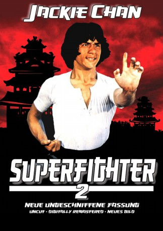

#2789 Superfighter II
Alternativ: Superfighter 2 (Englischer Titel)
 
 IMDB-Wertung: 5.3 / 10
IMDB-Wertung: 5.3 / 10  Metascore: 0
Metascore: 0 
Die Geschichte handelt von zwei Brüdern, Lung und Chi-Pei Chan, die dem Yin-Yang Clan angehören. Sie wollen den Tod ihres Vaters rächen, der vom verfeindeten Clan Teufel des Himmels und der Erde ermordet wurde. Sie müssen erkennen, dass hinter dem Mordanschlag eigentlich General Yen aus dem ersten Teil steckt, der wiederauferstanden ist. Nach langen Kämpfen können sie ihn dann endgültig besiegen.
Jahr: 1983
Dauer: 92 Minuten
FSK: BPjM Restricted
Land: Hong-Kong Studio: Cine WorldTonspuren:
Untertitel: Deutsch,
Auflösung: 720p (1280x536) Größe: 4474 MB
Genre: Action
Regisseur: Chuan Chen
Drehbuch: Wei Lo
Soundtrack:
Darsteller:
Datei: X:\HD-Eastern-Collections\Jackie Chan\Superfighter\Superfighter II (1983, FSKBPjM Restricted, 1280x536).mkv seit 14.12.2015
Festplatte: HD Eastern+Western
 Es gibt insgesamt 58 Filme in der Gruppe 'HD-Eastern-Collections\Jackie Chan'
Es gibt insgesamt 58 Filme in der Gruppe 'HD-Eastern-Collections\Jackie Chan'